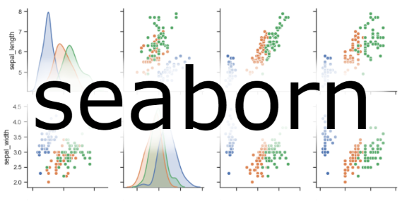

In this module, you'll learn about an example around estimating used car prices, using
Python. Then we will introduce an overview of Python packages used for data analysis. And
finally, you will learn about how to import and export data in and from
Python, and how to obtain basic insights from the dataset on used cars and their prices.
We'll be answering the following question:
"Can we estimate the price of a used car based on its characteristics?"
To answer this question, we are going to use various Python packages to perform data
cleaning, exploratory data analysis, model development and model evaluation.
The Problem
Before we begin talking about the problem (used car prices), we should first understand the
importance of data analysis.
Data is collected everywhere around us, manually by scientists, or collected digitally
every time we click on a website or on mobile device. But data does not mean information.
Data analysis, and in essence, data science, helps us unlock the information and insights
from raw data, to answer our questions.
So data analysis plays an important role by helping us to discover useful information
from the data, answer questions, and even predict the future or the unknown.
In this problem we have a friend named Tom. And Tom wants to sell his car. But he doesn't
know how much he should sell his car for.
Tom wants to sell his car for as much as he can. But he also wants to set the price
reasonably so someone would want to purchase it.
Let's think like data scientists and clearly define the problems:
For example, is there data on the prices of other cars and their characteristics?
What features of cars affect their prices? Colour? Brand? Does horsepower also affect
the selling price, or perhaps, something else?
To answer these questions, we're going to need some data.
In the next sections, we'll:
First, to understand the data.
Than, import it into Python.
Finally, having some basic insights from the data.
Understanding the Dataset
The dataset used in this course is an open dataset, by Jeffrey C. Schlimmer.
There are a lot of columns, and we will just go through a few of them.
The first attribute, "symboling", corresponds to the insurance risk level of a car.
Cars are assigned a risk factor symbol associated with their price.
A value of +3 indicates that the auto is risky, -3 that it is probably pretty safe.
The second attribute "normalized-losses" is the relative average loss payment per insured
vehicle year.
This value range from 65 to 256, and is normalized for all autos within a particular size
classification (two-door small, station wagons, sports/speciality, etc...), and represents
the average loss per car per year.
The other attributes are easy to understand.
the 26th attribute is "price". This is our target value, or label.
This means "price" is the value that we want to predict from the dataset, and the
predictors should be all the other variables.
Python Packages for Data Science
We have divided the Python data analysis libraries into three groups:
The first group is called scientific computing libraries
Pandas offers data structure and tools for effective data
manipulation and analysis.
It provides fast access to structured data.
The primary instrument of Pandas is a two-dimensional table consisting of column and
row
labels, which are called a DataFrame.
It is designed to provide easy indexing functionality.
Pandas
The Numpy library uses arrays for its inputs and outputs.
It can be extended to objects for matrices, and with minor coding changes, developers
can perform fast array processing.
NumPy
SciPy includes functions for some advanced math problems, as well
as data visualization.
SciPy
Using data visualization functions is the best way to communicate with
others, showing them meaningful results of analysis.
These libraries enable you to create graphs, charts and maps.
The Matplotlib package is the most well-known library for data
visualization.
It is great for making graphs and plots. The graphs are also highly customizable.
Matplotlib
Another high-level visualization library is Seaborn.
It is based on Matplotlib. It's very easy to generate various plots such as heat maps,
time series, and violin plots.

Seaborn
The algorithmic libraries tackle some machine learning tasks from basic to complex.
Here we introduce two packages:
The Scikit-learn library contains tools for
statistical modeling, including regression, classification, clustering and so on.
This library is built on NumPy, SciPy and Matplotlib.
Scikit-learn
StatsModels is also a Python module that allows users to explore
data, estimate statistical models, and perform statistical tests.
Importing and Exporting Data in Python
Data acquisition is a process of loading and reading data into notebook from various
sources.
To read any data using Python’s pandas package, there are two important factors to
consider: format and file path.
Format is the way data is encoded.
We can usually tell different encoding schemes by looking at the ending of the file name.
Some common encodings are csv, json, xlsx, hdf and so forth.
The file path tells us where the data is stored.
Reading data in pandas can be done quickly in three steps :
First, import pandas.
Then define a variable with the file path.
And then use the read_csv method to import the data.
# Import pandas library
import pandas as pd
# Read the online file by the URL provides above, and assign it to variable "df"
file_path = "imports-85.data"
df = pd.read_csv(file_path, header=None)
“read_csv” assumes that the data contains a header. Our data on used cars has no column
headers, so that is why we assigned None to headers.
Since printing the entire dataset may take up too much time and resources, to save time,
we can just use dataframe.head() to show the first n rows of the data frame.
# show the first 5 rows using dataframe.head() method
print("The first 5 rows of the dataframe")
df.head(5)
Similarly, dataframe.tail(n) shows the bottom n rows of data frame.
df.tail()
It is difficult to work with the dataframe without having meaningful column names, however,
we can assign column names in pandas.
At some point in time after you’ve done operations on your dataframe, you may want
to export your pandas dataframe to a new CSV file.
You can do this using the method, ”to_csv()"
df.to_csv("automobile.csv", index=False)
Pandas can read from and save to others then CSV:
Data Format
Read
Save
csv
pd.read_csv()
df.to_csv()
json
pd.read_json()
df.to_json()
excel
pd.read_excel()
df.to_excel()
hdf
pd.read_hdf()
df.to_hdf()
sql
pd.read_sql()
df.to_sql()
Basic Insights from Datasets
After importing the data, it's time for us to explore the dataset.
Panda's has several built in methods that could be used to understand the datatype of
features or to look at the distribution of data within the dataset.
Data has a variety of types.
The main types stored in Pandas objects are object, float, int, and datetime.
Pandas automatically assigns types based on the encoding it detects from the original
data table. For a number of reasons, this assignment may be incorrect.
In this case, we may need to manually change the datatype to float.
In order to better learn about each attribute, it is always good for us to know the data
type of each column. In Pandas:
df.dtypes
Now we would like to check the statistical summary of each column to learn about the
distribution of data in each column.
To get the quick statistics, we use the describe method.
It returns the number of terms in the column as "count", average column value as "mean",
column standard deviation as "std", the maximum and minimum values, as well as the boundary
of each of the quartiles.
df.describe()
By default, the dataframe.describe() function skips rows and columns that do not contain
numbers. To enable a summary of all the columns, we could add an argument
include="all" inside the describe function bracket.
df.describe(include = "all")
Now, it provides the statistical summary of all the columns, including object-typed
attributes.
We can now see how many unique values, which is the top value and the frequency of top value
in the object-typed columns.
Some values in the table above show as "NaN", this is because those numbers are not
available regarding a particular column type.
You can apply the method to ".describe()" to the columns 'length' and 'compression-ratio'
as follows: